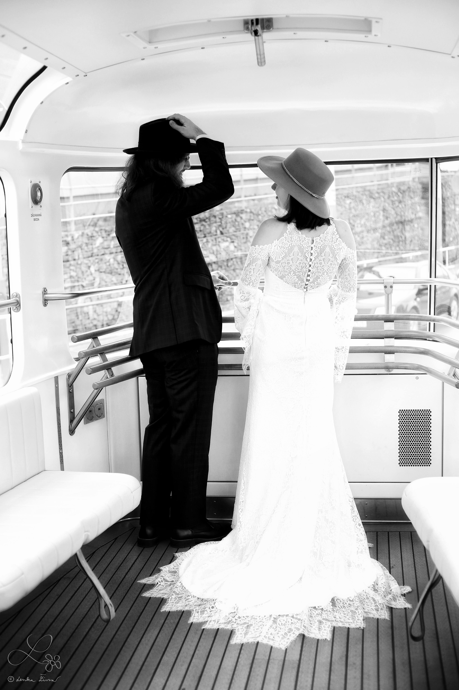
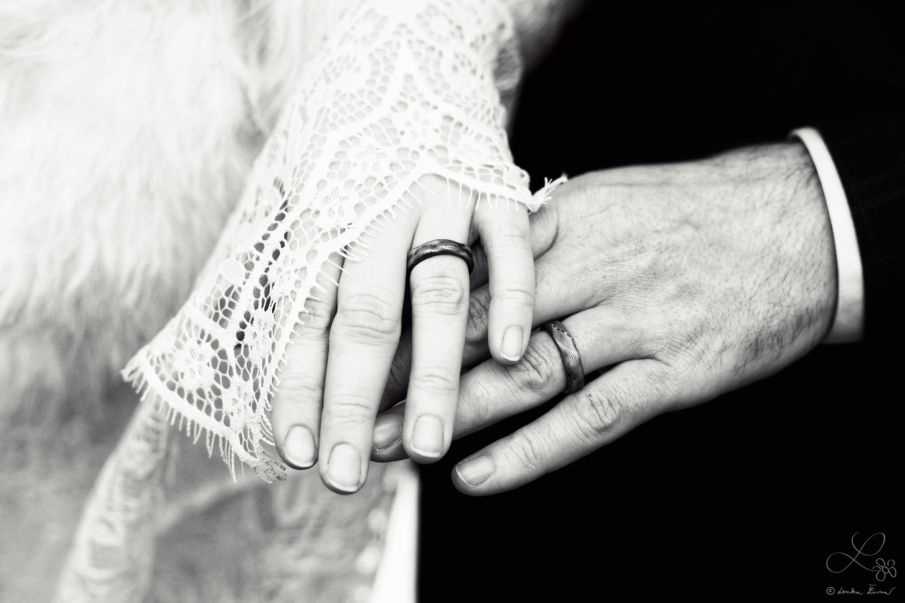
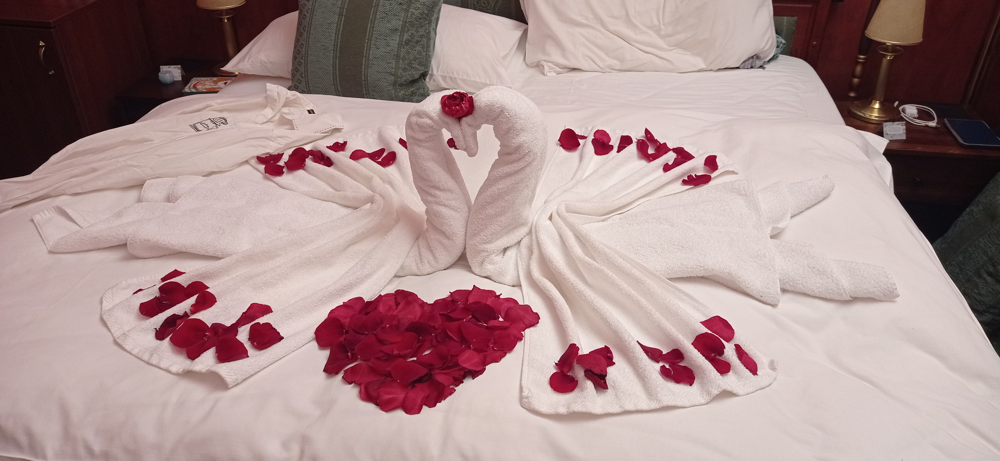
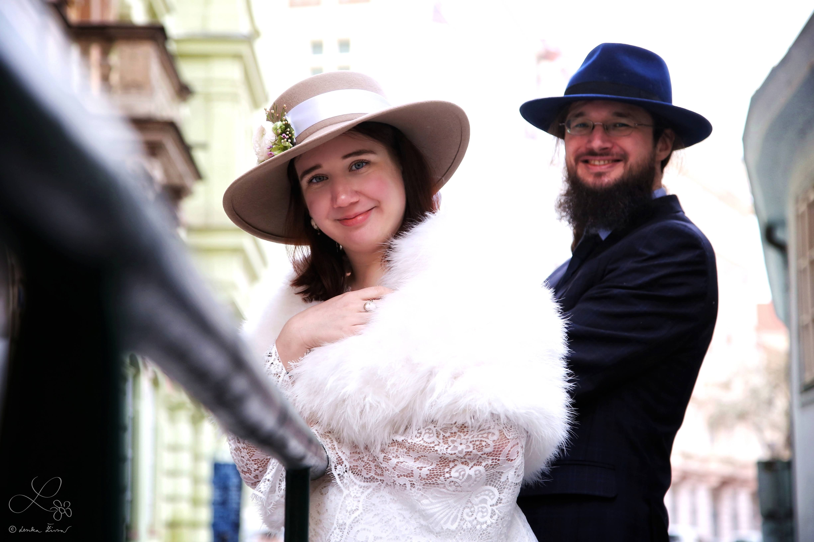
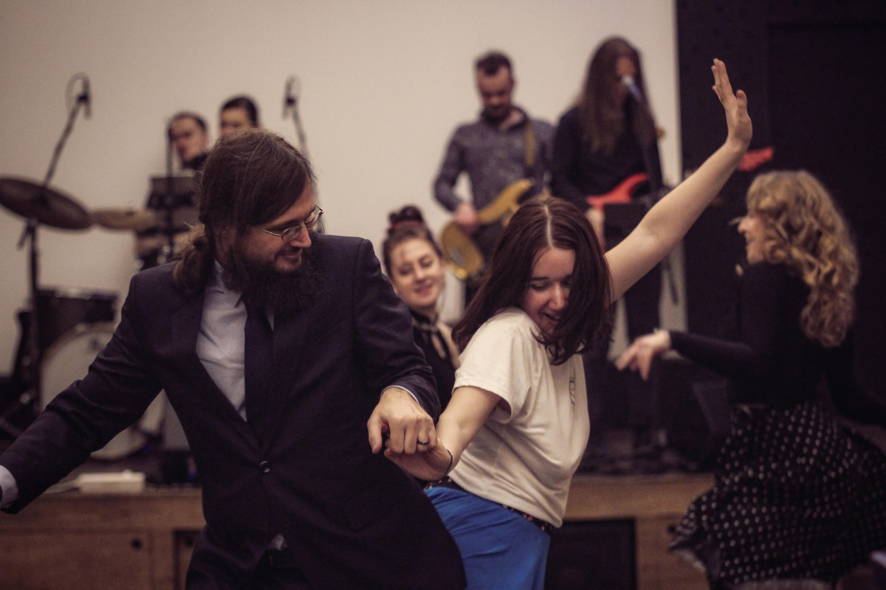
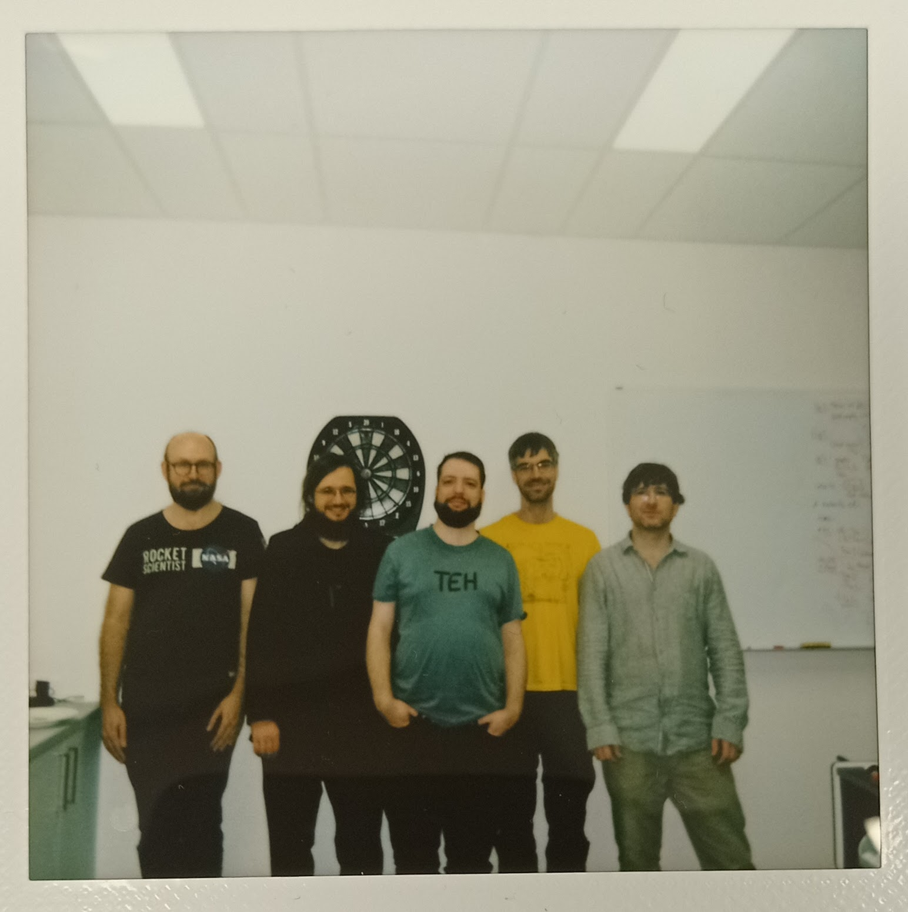
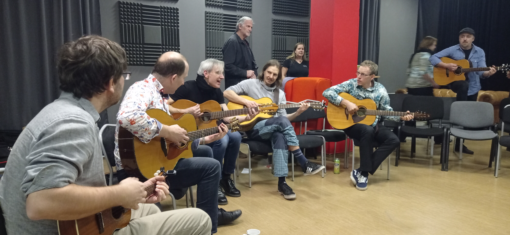

Ve čtvrtek 29.2.2024 jsme spolu po pětiletém vztahu vstoupili do manželství. Níže najdete vzpomínky a fotografie z našeho svatebního týdne, během kterého jsme náš svazek oslavili s našimi přáteli a rodinami.
Přišlo nám, že když se člověk snaží všechny svatební aktivity nacpat do jednoho dne, tak je to zbytečně hektické a všichni jsou z toho unavení. Navíc ne každého baví či zajímají všechny svatební aktivity. Proto jsme se rozhodli svatební aktivity rozložit do celého týdne, tak aby bylo na všechno dost času, tempo všech akcí bylo poklidné, a každý si mohl sám vybrat, čeho se chce zúčastnit a čeho ne.
Z našeho pohledu se tohle skvěle povedlo, užili jsme si krásný obřad, divokou párty, společné tančení, skvělý koncert, poklidné společné hraní a zpívání, hraní her, luštění šifer, procházkou Prahou i zoologickou zahradou... A u toho jsme se nestrhli, obvykle jsme nevstávali před polednem, a měli jsme dost času se setkat a popovídat si s našimi blízkými.
Svatbu jsme si udělali hodně podle svého. Některé svatební tradice nám přišly dobré, a tak na svatbě byly: například klasický obřad, házení rýže, první manželský tanec, rozplétání svatební kytice, novomanželský kvíz, svatební bingo... byť i tak jsme si leccos udělali trochu po svém. A některé věci jsme zjistili, že nepotřebujeme, a tak jsme je prostě škrtli; například jsme vůbec neměli svatební dort, protože máme ohledně dortů dost jiné preference, a nevymysleli jsme takový, u kterého by nám oběma přišlo, že je opravdu náš. (Všimli jste si, že nebyl dort?) A k tomu jsme přidali spoustu věcí, které na svatbách běžně nebývají, ale jsou hodně naše (jako třeba hraní deskových her). Naši svatebčané tak měli příležitost nás blíže poznat, seznámit se s tím, co máme rádi a co je nám blízké, prožít si leccos s námi a snad i trochu poznat svět tak jako ho společně vnímáme našima očima (a dalšími smysly).
Asi největším naším společným zájmem je hudba, a to zejména folková, proto naše svatba byla plná hudby. Hudba je samozřejmě nejlepší naživo, navíc máme spoustu kamarádů hudebníků, takže na naší svatbě byla živá hudba na obřadu, na párty, samozřejmě na svatebním koncertě, a ještě jsme si po párty i po koncertě s kamarády dál hráli a zpívali do noci či do rána.
Taky rádi chodíme na šifrovačky luštit šifry, rádi chodíme do zoo, rádi hrajeme deskové hry, rádi se procházíme Prahou, a rádi pijeme dobrou kávu, a tak i tohle všechno jste s námi na naší svatbě mohli zažít.
Níže je pár vzpomínek na jednotlivé součásti našeho svatebního týdne, postupně přibývají i fotky a videa.
Svatbu jsme si hodně moc užili, bylo to hrozně fajn! Všem můžeme vřele doporučit se příliš nevázat konvencemi a tradicemi a názory jiných lidí a udělat si svatbu po svém, stojí to za to. Navíc přestože jsme všechno dělali primárně podle toho jak jsme chtěli my a ne jak chtěli jiní lidé, tak se nám zdá (a něco jsme v tom smyslu i zaslechli), že i naši svatebčané si naši svatbu užili a přišlo jim fajn jak jsme to udělali.
Moc děkujeme všem, kteří s námi sdíleli tuto oslavu našeho vztahu, jsme rádi, že jste se zapojili, a vážíme si toho, že jste nám dali to nejcennější, co můžeme jeden druhému dát: svůj čas.
A protože datum naší svatby se opakuje jen jednou za čtyři roky (namísto výročí svatby tedy budeme mít jakési výčtyřletí či kvadrienále), máme v plánu to pokaždé o to víc oslavit. Takže už si rezervujte v diářích pár dnů kolem 29.2.2028, nejspíš zase něco bude ;-)
Svatebčané od nás dostávali tento diagram, kterým jim pomáhal si vybrat, kterých akcí se zúčastní:

Na obřad jsme společně se svědky a fotografkou jeli soukromou svatební tramvají. Pronajali jsme si unikátní tramvaj T3 Coupé, která nás dovezla z Libeňského zámku až k Břevnovskému klášteru.
Bylo to parádní, můžeme vřele doporučit, pokud najdete vhodnou příležitost! Tramvaj se objednává skrze formulář na webu pražského dopravního podniku. Navíc pokud si jako my objednáte T3 Coupé, tak si můžete v tramvaji připojit mobil přes Bluetooth na vestavěný sound systém, takže doporučujeme si předem připravit playlist a užít si párty v tramvaji ve vašem stylu :-) V létě je tahle tramvaj částečně otevřená, v zimě naopak vytápěná. A můžete si do tramvaje objednat i občerstvení, dokonce tam mají i výčep! (Ale tohle jsme nevyužili.)
Trasu jsme si zvolili tak, aby jela jednak místy, která jsou pro nás něčím významná, a jednak místy, kde je hezký výhled :-) Takže jsme vyjeli od aktuálního bydliště, jeli jsme přes Kobylisy kolem místa kde jsme bydleli dříve, přes Trojský most s výhledem na Matfyz, přes Štefánikův most s výhledem na hrad, přes Václavské náměstí, přes Albertov což už je zase blízko toho kde jsme bydleli ještě předtím v Podolí, po novoměstském nábřeží s výhledy na hrad a řeku, kolem Filosofické fakulty na náměstí Jana Palacha kde studovala Anička, přes Mánesův most s výhledem na Karlův most a centrum, z Klárova nahoru kde je z tramvaje náš nejoblíbenější výhled na Prahu (tramvaj nám tady dokonce přibrzdila abychom si to ještě víc užili), kolem Aniččina oblíbeného Letohrádku královny Anny, krásnou tratí kolem hradu, přes Pohořelec kde Anička chodila na gympl, kolem klubu Kaštan kam chodíme na koncerty, a pak už jsme vystoupili u Břevnovského kláštera. Za námi zrovna nic nejelo, tak jsme se ještě vyfotili s tramvají v zastávce, a šli jsme ke klášteru (kde jsme byli brzo, tak jsme se s fotografkou chvíli fotili u rybníka už před obřadem).
Fotky z cesty svatební tramvají od Lenky Živné:
Civilní obřad se uskutečnil ve čtvrtek 29. února 2024 ve 14:00 v Tereziánském sále Břevnovského kláštera.
Na obřadu nám na keltskou harfu a violoncello zahráli naši kamarádi Ivana Pokorná a Pavel Barnáš, kteří společně vystupují pod názvem Bárka. Na nástup ženicha zazněla znělka seriálu Cirkus Humberto, nevěstě zahráli Memory, a pak během gratulací hráli další skladby ze svého repertoáru.
Po gratulacích jsme udělali špalír v atriu prelatury, kterým novomanželé prošli a svatebčané na ně házeli rýži.
Fotky z obřadu od Lenky Živné (zatím jen pár, bude jich víc):
Po obřadě se novomanželé s nejužší rodinou (rodiče a sourozenci s partnery a dětmi, svědci) přesunuli na společnou obědovečeři do Klášterního šenku, ostatní svatebčané měli pro ten den volno; Aniččini spolužáci z gymplu ho využili pro uspořádání třídního srazu v sousední hospodě.
Večer jsme se ubytovali v hotelu Haštal na našem oblíbeném Haštalském náměstí, kde jsme bydleli až do neděle. Měli jsme pronajatý pokoj 22 s balkonkem, a krásně se tam o nás starali, dokonce jsme po příchodu měli na pokoji vysypanou cestičku z okvětních plátků růží až k novomanželskému loži.
V pátek v brzkém odpoledni jsme se sešli s fotografkou na Haštalském náměstí, kde jsme od čtvrtka do neděli bydleli v hotelu Haštal. Haštalské náměstí je magicky klidné a tiché místo přímo v centru Prahy, proto ho máme tak rádi (a navíc jsou poblíž dobré kavárny). V hotelu a jeho okolí pak vznikla spousta fotek, které sem postupně přidáme.
Fotky z okolí Haštala od Lenky Živné (zatím jen pár, bude jich víc):
Párty se bude konat v pátek 1. března 2024 ve spodním patře a sále Vinohradského pivovaru na Praze 10 (Korunní 2506). Můžete přicházet od 16:00. Klidně můžete přijít později a/nebo odejít dříve, to vůbec nevadí, prostě podle toho jak budete moci a chtít. Prostory máme rezervované do 3:00.
Anička bude ještě v krásných šatech, které má půjčené jen do neděle, Ruda plánuje být krásný celý týden 🙂. Zkrátka, tohle bude hned po obřadu ta asi nejvíc svatební součást svatebního týdne. (Kvůli těm šatům se ani tady nebudou smět bublat bublifuky, ty šaty to nemají rády.)
Večer budou moderovat a organizovat naše dobré duše Veronika Žáčiková a Izabela Petříková. S organizací jim bude pomáhat Anička Šusová, která pro vás bude případně k dispozici i na telefonu 775266264.
Hlavní program se bude odehrávat v sále, kde bude hrát živá hudba a v přestávkách zde budou probíhat různé svatební aktivity. V sále také budou natažené šňůry pro zavěšení svatebních přání a eventuálních drobných darů. Pokud nám chcete dát peníze, ideálně je zasílejte na bankovní účet 184310459/0600 (viz níže), případně je bude možné v hotovosti vložit do truhličky na místě.
Od hudby si budete moci odpočinout u stolů ve vedlejší místnosti, kde pro vás bude připravený raut. K dispozici vám bude také bar, kde si můžete volně objednávat alkoholické i nealkoholického pivo, víno a nealkoholické nápoje; tvrdý alkohol si platíte sami.
Přibližný orientační program:
Až skončí VeHiBa, kamarádi z kapely Isara si vezmou kytary a zahrají a zazpívají si s námi u stolu nejenom svoje písničky. Budeme rádi, pokud se přidáte se svým zpěvem. Pokud na něco hrajete, vezměte si to s sebou a můžete si zahrát taky!
Dresscodem na svatební party se zbytečně netrapte. Budeme rádi, pokud vám to bude slušet, nemusíte si brát oblek ani plesové šaty (ale můžete, pokud chcete). Vezměte si na sebe to, v čem se budete cítit dobře. Pokud chcete náš tip, tak si můžete vzít třeba šaty, sukni, společenské kalhoty nebo džíny, a k tomu blůzu, košili nebo tričko.
Fotky z párty od Kačky Šelemberkové:
Shodou okolností se od 15:00 do 20:00 hodin koná online šifrovačka Sendvič, které se jako obvykle účastníme s naším týmem “Divize nulou”.Můžete se také zúčastnit, schválně kdo z vás náš tým porazí 🙂. Po Sendviči se můžeme sejít online na Zoomu ve 20:30, a popovídat si o tom, jak se vám to líbilo a jestli se třeba někdy přidáš i na nějakou šifrovačku v terénu 🙂.
Šifrovačku nijak neorganizujeme, každý tým se musí přihlásit sám. Vstup na šifrovačku je zdarma, je jen třeba se registrovat na jejich stránkách. Dobrovolně je možné přispět na jakoukoli neziskovku libovolnou částkou. Budeme rádi, když tak učiníte 🙂. Během hry vám nebudeme moci radit, protože budeme luštit. Ale rádi navzájem propojíme zájemce, protože ve víc lidech se líp luští. Samozřejmě můžeš zapojit i jiné lidi než svatebčany.
Specifikem Sendviče je luštění ve dvou ‘kolech’, první část šifer se odkryje v 15:00 a čas na luštění je do 17:00, potom je hodina pauza na sendvič, a poté se v 18:00 odkryje druhá část šifer, na které je čas do 20:00. Nezapomeňte si proto doma připravit všechno na dobrou sváču 🙂
Tým Divize ženichem:
Sejdeme se ve 13:00 u hlavního vstupu do ZOO. ZOO má otevřeno do 17:00.
Rádi, ale dost málo, chodíme do ZOO. Tak jsme si řekli, že to třeba někdo má stejně 🙂. Vstup si bude hradit každý sám. Pokud by dávalo smysl nějaké rodinné nebo skupinové vstupné, domluvíme to na místě, podle toho, kolik nás bude. Poud by byl vstup do ZOO pro Tebe příliš velkým výdajem, ale hodně bys o to stál*a, napiš nám, pozveme Tě 🙂. Po vstupu budeme hlasovat o oblíbených zvířátkách, aby nebyl nikdo smutnej a každej viděl to svoje (pokud teda zrovna nebude spát…). Anička se jistě ráda zastaví u papoušků a jakýchkoli jiných voliér. Jelikož pražská ZOO nemá ptakopyska, bude Ruda trošku smutný. Ale i tak se rád koukne do Darwinova kráteru na ďábly medvědovité nebo na Šišku a celou luskouní rodinu. Jaký zvířátko potřebuješ vidět ty?
Odpočívali jsme a nedělali jsme nic :-)
Hodně rádi hrajeme deskové hry, takže si s vámi rádi taky něco zahrajeme.
Sejdeme se ve Standard Cafe (Karoliny Světlé 321/23, Praha 1), kde máme rezervaci v podzemí (na jméno Nováková). Můžete s sebou přinést něco, co byste si chtěli zahrát (ale nemusíte), my taky něco přineseme, a na místě uvidíme, jak to dopadne. Rezervaci máme od 17. hodiny a zavírá se asi po 23. hodině, my dva tam asi budem celou dobu, ale klidně přijďte i jen na část.
V podniku si můžete nahoře na baru objednat nápoje i nějaké menší jídlo (můžete platit rovnou na baru, nebo si otevřít účet a zaplatit při odchodu). Pokud nechcete, aby se u vašich her jedlo a pilo, tak si to hlídejte. Našim hrám jídlo ani pití nevadí :-)
Podle toho, kdo jak kdy přijde a co kdo bude chtít hrát za hry, se vždycky nějak uskupinkujeme a něco si zahrajeme. Zájem přijít vyjádřilo asi 20 z vás. Většina her je pro 4 hráče, občas trochu víc, ale nejspíš se nás sejde ještě víc, takže pravděpodobně nebudeme hrát všichni spolu, ale rozdělíme se vždycky nějak do skupinek. Neplánujeme to nějak sofistikovaně organizovat, prostě se nějak sejdeme a něco si zahrajeme 🙂
Anička čekající na další hráče:

Ukážeme vám naše oblíbená místa v centru Prahy. Občas se někde zastavíme na kafe; pokud chcete být eco-friendly, můžete si vzít vlastní hrneček.
Sešli jsme se ve 14:05 na Pohořelci před pomníkem Tychona Brahe a Johanna Keplera. Na Pohořelci jsme nestartovali jen tak náhodou. Jednak je to skvělý výchozí bod pro objevování Prahy, jednak tam Anička chodila na gympl. Z Pohořelce jsme šli přes Nový svět až na Malou Stranu, kde Ruda studoval a pracoval. Přešli jsme most na Staré Město, kde zase studovala Anička. Dál jsme šli až na naše oblíbené Haštalské náměstí, kde jsme po obřadě několik nocí bydleli v hotelu. Různými průchody a úzkými uličkami jsme pak dobloudili až k Rotundě Nalezení svatého Kříže, a přitom se fikaně vyhnuli Staroměstskému náměstí i největším davům turistům 🙂 Končili jsme v blízkosti tramvajové zastávky Národní divadlo.
Na procházce jsme vám ukázali Prahu našima očima, navštívili jsme některá naše oblíbená místa, a zastavili jsme se na kávu v některých našich oblíbených kavárnách:
Byla to jediná bublifuk-friendly akce, ale bublifuky nikdo nevzal. Zato si většina účastníků vzala vlastní hrnky na kafe, takže jsme byli relativně eco-friendly.
Přibližná mapa toho, kudy jsme šli
Byla pauza od svatebních aktivit, ale byli jsme na Notování.
Svatební koncert byl v Music City Clubu ve 2. patře prodejny hudebních nástrojů Music City (Ocelářská 937).
Na svatebním koncertě zahrály naše oblíbené kapely a písničkáři: Choroši, Jerry, Žamboši a Honza Jícha.
Občerstvení bylo částečně samozajištěné, od pana kavárníka jsme měli výbornou kulajdu, maminka nevěsty udělala hory chlebíčků a přinesla i další dobroty, a spousta dalších hostů také něco napekli a přinesli, moc děkujeme!
Večer moderovali Anička s Rudou. Vybrali jsme si kapely, které jsou pro nás důležité, a tak jste se spíš než oficiality dozvěděli, co nás s těmito hudebníky a jejich písničkami pojí.
Pokud chcete vědět, co nám hrálo za kapely, můžete kouknout na jejich videozáznamy tady (tohle nejsou videa z koncertu, ale ty možná taky časem budou):
Po koncertě se ještě dlouho hrálo a zpívalo, odcházeli jsme asi v půl sedmé ráno :-)
Pokud s námi chceš sdílet nějaké svoje fotky z naší svatby, můžeš je přinahrát do sdíleného fotoalba zde:
Sdílené fotoalbum na Google Photos
Níže postupně přidáváme samostatná alba s fotkami z jednotlivých akcí, ty si můžeš prohlížet a stahovat, a pokud se přihlásíš Google účtem tak i komentovat. Pokud si nepřeješ, aby některá z fotek byla zveřejněná, napiš nám, a my ji schováme.
Před svatbou jsme po vás chtěli vyplnit svatební dotazník, hlavně abychom věděli, kolik lidí máme kde očekávat, ale ptali jsme se vás i na pár dalších důležitých otázek.
Mrzí nás, že přestože mnoho z vás mělo zájem o cestu svatební tramvají, tohle nakonec z několika důvodů nevyšlo podle naší původní představy, a místo toho jsme jeli tramvají jen se svědky a fotografkou. Omlouváme se tedy, že jsme vás navnadili, a nakonec jste z toho nic neměli. Nicméně bylo to hodně fajn, takže pokud budete mít dobrou příležitost si objednat soukromou tramvaj, tak to můžeme vřele doporučit (a vyjde to o dost levnějc než si objednat soukromý vlak).
Největší radost nám udělala hned první otázka: Jsi pitomec? Dotazník jsme dostali vyplněný 53x, z toho 14 odpovídajících jsou pitomci (zejména ti, kteří vyplňovali dotazník a po termínu), 12 odpovídajících nejsou pitomci, a zbylá polovina z vás vyplnila spousty dalších zajímavých odpovědí, z nichž některé vybíráme (řazeno chronologicky):

Nejvíc nás potěší, když přijdeš a zúčastníš se spolu s námi některých aktivit.
Pokud nám chceš něco dát, budeme rádi za finanční příspěvek na bankovní účet 184310459/0600 (můžeš načíst QR kód bankovní appkou) či hotově na místě.
Peníze jsou dost neosobní, proto je udělejme osobnější! Zkus nám darovat takovou částku, která vyjadřuje něco, co nějak souvisí se vztahem, který s námi máš.
Například:
A samozřejmě nám dej například ve zprávě pro příjemce vědět, co tato částka vyjadřuje :-)
Chceš-li nám dát i něco fyzického (třeba přání), tak prosíme, ať to je něco, co jde zavěsit na kolíček na šňůru, která bude natažená podél zdi na párty. Jinam než na obřad nebo párty prosíme fyzické dary nenos.
Nechceme tu úplně psát o penězích, ale zároveň ani nemáme úplně potřebu dělat kolem peněz nějaké velké tajnosti, takže pokud by někoho z vás třeba zajímalo, kolik to celé stálo, tak nám klidně napište, rádi se podělíme i o tyto informace a zkušenosti.
Udržitelnost je pro nás důležitým tématem, proto i v rámci svatby jsme se snažili být udržitelnější než průměrná svatba a i naše hosty jsme nabádali k udržitelnějšímu chování.
Našli jsme dvě šály. Fotky dodáme sem.
Rudolf možná někde ztratil sponu do vlasů.
Ohledně svatby nás ideálně kontaktuj na svatebním e-mailu svatba@nikde.eu, to čteme oba. Případně piš přes Messenger či WhatsApp. Pokud radši telefonuješ, můžeš zavolat Aniččce na číslo 737 880 716.